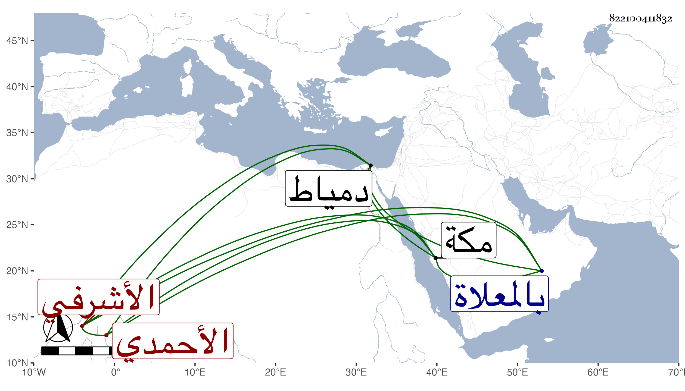

0902Sakhawi.DawLamic.ITO20230111-ara1.EIS1600.822100411832
Biography ID: 822100411832
676
قانصوه الأحمدي الأشرفي إينال ويعرف بالخسيف . ممن رقاه الأشرف قايتباي للحسبة وشد الشربخاناة ثم قدمه كل ذلك مع ترفعه وسخفه وجرأته بحيث أفضى به إلى أن ضرب الوزير .ونفاه السلطان لدمياط وكثر التشكي منه فحوله لمكة فدام بها حتى مات في عصر يوم الجمعة ثالث عشري المحرم سنة اثنتين وتسعين ، ودفن من الغد بالمعلاة في قبة الأمير بردبك الدوادار ومستراح منه .
